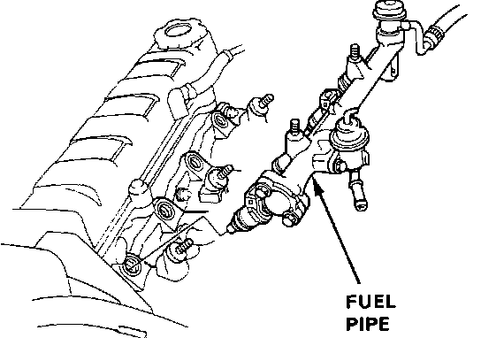

Fuel Rail: Description and Operation
Fuel Rail (pipe):

The Fuel Rail (Pipe), is bolted to the intake side of the cylinder head, delivers pressurized fuel to the fuel injectors. The fuel supply line, fuel return line, fuel injectors, and the fuel pressure regulator are all connected to the Fuel Rail. Pressurized fuel is fed into one end of the Fuel Rail from the fuel supply line, the fuel injectors are mounted along the side, and the fuel pressure regulator and fuel return line are mounted to the other end. This arrangement maintains a constant pressure in the Fuel Rail and to all the fuel injectors.